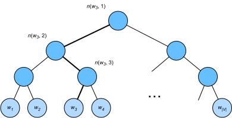

Huấn Luyện Xấp Xỉ¶
Nhắc lại các thảo luận của chúng ta trong sec_word2vec.
Ý tưởng chính của mô hình skip-gram là
dùng các phép softmax để tính
xác suất có điều kiện của việc
sinh một từ ngữ cảnh \(w_o\)
dựa trên từ trung tâm đã cho \(w_c\)
trong :eqref:eq_skip-gram-softmax,
trong đó mất mát logarit tương ứng được cho bởi
giá trị đối của :eqref:eq_skip-gram-log.
Do bản chất của phép softmax,
vì một từ ngữ cảnh có thể là bất kỳ từ nào trong
từ điển \(\mathcal{V}\),
giá trị đối của :eqref:eq_skip-gram-log
chứa tổng
của số hạng nhiều bằng toàn bộ kích thước từ vựng.
Do đó,
phép tính gradient
cho mô hình skip-gram
trong :eqref:eq_skip-gram-grad
và phép tính
cho mô hình continuous bag-of-words
trong :eqref:eq_cbow-gradient
đều chứa
tổng này.
Thật không may,
chi phí tính toán
cho các gradient như vậy,
vốn phải lấy tổng trên
một từ điển lớn
(thường có
hàng trăm nghìn hoặc hàng triệu từ),
là rất lớn!
Để giảm độ phức tạp tính toán nói trên, mục này sẽ giới thiệu hai phương pháp huấn luyện xấp xỉ: negative sampling và hierarchical softmax. Do sự tương tự giữa mô hình skip-gram và mô hình continuous bag of words, chúng ta sẽ chỉ lấy mô hình skip-gram làm ví dụ để mô tả hai phương pháp huấn luyện xấp xỉ này.
Negative Sampling¶
Negative sampling sửa đổi hàm mục tiêu ban đầu. Với cửa sổ ngữ cảnh của một từ trung tâm \(w_c\), sự kiện rằng bất kỳ từ (ngữ cảnh) nào \(w_o\) đến từ cửa sổ ngữ cảnh này được xem là một sự kiện với xác suất được mô hình hóa bởi
trong đó \(\sigma\) dùng định nghĩa của hàm kích hoạt sigmoid:
Hãy bắt đầu bằng cách tối đa hóa xác suất đồng thời của tất cả các sự kiện như vậy trong các chuỗi văn bản để huấn luyện word embedding. Cụ thể, với một chuỗi văn bản độ dài \(T\), ký hiệu \(w^{(t)}\) là từ tại bước thời gian \(t\) và đặt kích thước cửa sổ ngữ cảnh là \(m\), xét việc tối đa hóa xác suất đồng thời
Tuy nhiên,
:eqref:eq-negative-sample-pos
chỉ xét các sự kiện
liên quan đến ví dụ dương.
Kết quả là,
xác suất đồng thời trong
:eqref:eq-negative-sample-pos
được tối đa hóa thành 1
chỉ khi tất cả các vector từ đều bằng vô cùng.
Dĩ nhiên,
kết quả như vậy là vô nghĩa.
Để làm cho hàm mục tiêu
có ý nghĩa hơn,
negative sampling
thêm các ví dụ âm được lấy mẫu
từ một phân bố định trước.
Ký hiệu \(S\)
là sự kiện rằng
một từ ngữ cảnh \(w_o\) đến từ
cửa sổ ngữ cảnh của một từ trung tâm \(w_c\).
Với sự kiện liên quan đến \(w_o\) này,
từ một phân bố định trước \(P(w)\),
lấy mẫu \(K\) từ nhiễu
không đến từ cửa sổ ngữ cảnh này.
Ký hiệu \(N_k\)
là sự kiện rằng
một từ nhiễu \(w_k\) (\(k=1, \ldots, K\))
không đến từ
cửa sổ ngữ cảnh của \(w_c\).
Giả sử rằng
các sự kiện liên quan đến
cả ví dụ dương và các ví dụ âm
\(S, N_1, \ldots, N_K\) là độc lập lẫn nhau.
Negative sampling
viết lại xác suất đồng thời (chỉ liên quan đến các ví dụ dương)
trong :eqref:eq-negative-sample-pos
thành
trong đó xác suất có điều kiện được xấp xỉ thông qua các sự kiện \(S, N_1, \ldots, N_K\):
Ký hiệu
\(i_t\) và \(h_k\)
là chỉ số của
một từ \(w^{(t)}\) tại bước thời gian \(t\)
của một chuỗi văn bản
và một từ nhiễu \(w_k\),
tương ứng.
Mất mát logarit theo các xác suất có điều kiện trong :eqref:eq-negative-sample-conditional-prob là
Chúng ta có thể thấy rằng bây giờ chi phí tính toán gradient tại mỗi bước huấn luyện không liên quan đến kích thước từ điển, mà phụ thuộc tuyến tính vào \(K\). Khi đặt siêu tham số \(K\) thành một giá trị nhỏ hơn, chi phí tính toán gradient tại mỗi bước huấn luyện với negative sampling sẽ nhỏ hơn.
Hierarchical Softmax¶
Như một phương pháp huấn luyện xấp xỉ thay thế, hierarchical softmax dùng cây nhị phân, một cấu trúc dữ liệu được minh họa trong fig_hi_softmax, trong đó mỗi nút lá của cây biểu diễn một từ trong từ điển \(\mathcal{V}\).

Ký hiệu \(L(w)\)
là số nút (bao gồm cả hai đầu)
trên đường đi
từ nút gốc đến nút lá biểu diễn từ \(w\)
trong cây nhị phân.
Gọi \(n(w,j)\) là nút thứ \(j\) trên đường đi này,
với vector từ ngữ cảnh của nó là
\(\mathbf{u}_{n(w, j)}\).
Ví dụ,
\(L(w_3) = 4\) trong fig_hi_softmax.
Hierarchical softmax xấp xỉ xác suất có điều kiện trong :eqref:eq_skip-gram-softmax như sau:
trong đó hàm \(\sigma\)
được định nghĩa trong :eqref:eq_sigma-f,
và \(\textrm{leftChild}(n)\) là nút con trái của nút \(n\): nếu \(x\) đúng, \([\![x]\!] = 1\); ngược lại \([\![x]\!] = -1\).
Để minh họa, hãy tính xác suất có điều kiện để sinh từ \(w_3\) khi biết từ \(w_c\) trong fig_hi_softmax. Điều này yêu cầu các tích vô hướng giữa vector từ \(\mathbf{v}_c\) của \(w_c\) và các vector nút không phải lá trên đường đi (đường in đậm trong fig_hi_softmax) từ gốc đến \(w_3\), được duyệt trái, phải, rồi trái:
Vì \(\sigma(x)+\sigma(-x) = 1\), ta có các xác suất có điều kiện của việc sinh tất cả các từ trong từ điển \(\mathcal{V}\) dựa trên bất kỳ từ \(w_c\) nào cộng lại bằng một:
May mắn là, vì \(L(w_o)-1\) có bậc \(\mathcal{O}(\textrm{log}_2|\mathcal{V}|)\) do cấu trúc cây nhị phân, khi kích thước từ điển \(\mathcal{V}\) rất lớn, chi phí tính toán cho mỗi bước huấn luyện dùng hierarchical softmax được giảm đáng kể so với khi không huấn luyện xấp xỉ.
Tóm Tắt¶
- Negative sampling xây dựng hàm mất mát bằng cách xét các sự kiện độc lập lẫn nhau liên quan đến cả ví dụ dương và ví dụ âm. Chi phí tính toán cho huấn luyện phụ thuộc tuyến tính vào số từ nhiễu tại mỗi bước.
- Hierarchical softmax xây dựng hàm mất mát bằng đường đi từ nút gốc đến nút lá trong cây nhị phân. Chi phí tính toán cho huấn luyện phụ thuộc vào logarit của kích thước từ điển tại mỗi bước.
Bài Tập¶
- Làm thế nào để lấy mẫu từ nhiễu trong negative sampling?
- Kiểm chứng rằng :eqref:
eq_hi-softmax-sum-oneđúng. - Làm thế nào để huấn luyện mô hình continuous bag of words lần lượt bằng negative sampling và hierarchical softmax?